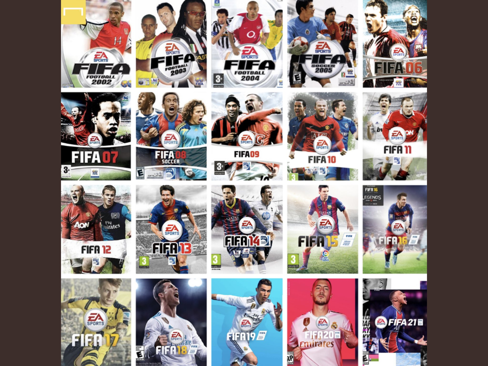

FIFA
Los videojuegos de la franquicia FIFA son reconocidos a nivel mundial como algunos de los juegos de simulación de fútbol más populares y exitosos. Desarrollados por EA Sports, estos títulos nos sumergen en la emoción y la pasión del deporte rey, brindándonos una experiencia virtual única y realista.
Cada entrega de FIFA ofrece una variedad de modos de juego, desde partidos amistosos hasta ligas y torneos completos, permitiéndonos asumir el control de nuestros equipos y jugadores favoritos. Podemos elegir entre una amplia selección de equipos y ligas de todo el mundo, y disfrutar de la autenticidad de los estadios, los uniformes y los rostros de los jugadores, gracias a las licencias oficiales.
La jugabilidad de FIFA es fluida y accesible, con controles intuitivos que nos permiten realizar movimientos precisos y tácticas estratégicas. Los gráficos detallados y los efectos visuales realistas contribuyen a una experiencia inmersiva, mientras que los comentarios dinámicos y la ambientación sonora nos sumergen en el ambiente del estadio.
